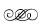
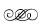

4. BÖLÜM
4. BÖLÜM
1. Deniz
Avuç büyüklüğünde küçük bir taş ve onu oyarak bir gitara dönüştürmeye çalışan Deniz, kendisini seyreden çocukların ilgisinden aldığı motivasyonla gitarın sapında olması gereken oyuntuyu vermek için küçük küçük vurdu darbeleri taşa sakince konuşurken: “İşte bizi de böyle şekillendirir hayat... Olmamız gereken şeye dönüşebilmek için küçük küçük darbelere ihtiyacımız vardır. Maalesef darbeler acıtır, büyürken acırsınız. Ama ancak acıyarak kendimizi bulduğumuzu kimse söylemez bize, belki de korkacağımızı sanırlar. Halbuki ruhumuz acıdıkça kabuğumuz soyulur... İçimizdeki güzellik dışımıza çıkana kadar. Aynı taşın içindeki bu heykel gibi.”
Elindeki heykelciği çocuklara göstermek için kaldırdı. Küçük Kaan, “Büyük şeyler de yapabilir misin? İnsan heykeli mesela” dedi.
Deniz gülümsedi, “Çok çalışırsam ve zamanımın tamamını bir süre onu yapmaya ayırırsam yapamayacağım hiçbir şey yok” diye cevap verdi ve Kaan’ın gözlerine bakıp, “İnsan vazgeçmediği her şeyi yapabilir” dedi. “Ben acımayı hiç sevmiyorum Deniz Abi” dedi heykelciğin bitmesi için sabırsızlanan küçük Elif. Acıda kalmıştı aklı.
Deniz, “Merak etme Elif, büyüdükçe bedenin daha az acıyacak. Daha az düşeceksin, artık ayak parmağını o kadar da vurmayacaksın, dizlerin kanamayacak çünkü bedenin acıya acıya kendini daha iyi taşımayı öğrenecek” dedi.
Ruhi kaşlarını çatarak baktı Deniz’e, tilki tarafından ısırılan köpeğini vurmak zorunda kalmıştı babası, kalbi çok kırıktı. Sanki dünyadaki tüm tilkileri yok ederse ancak rahatlayacaktı. Deniz özellikle ona bakarak devam etti konuşmasına: “Büyüdükçe artık bedenimizin değil, ruhumuzun acıdığı şeyler yaşamaya başlarız. Benim başıma neden bu geldi derken bulursun kendini. Ama nasıl bu darbeler olmasa elinizdeki heykelcikler ortaya çıkamazsa, hayatın ruhumuza yaşattığı acılar olmasa da biz, biz olamayız, olgunlaşamayız. Çünkü acı hisseden kişiden bir şey doğar: İntikam ya da anlayış. Seçim bizim. Kendine acıyanlar intikamı seçerler ve sonunda intikamını almaya çalıştıkları şeye dönüşürler. Haksızlığa uğradığı için intikam peşinde koşan biri haksızlığa uğratır. Anlamayı seçenlerse olgunlaşırlar. Bırakın hayat sizinle uğraşsın, acıtsın. İntikama düşmeyin, anlayın, anlayın ki öğretsin, değiştirsin. Bırakın hayat sizi kendinizle tanıştırsın.”
Gitarın oyması bitmişti, Elif’e verdi. Bir gün buradan giderse geride kendinden bir parça bırakmak istemişti daha hiç gitmeye niyeti olmasa da. Geride bıraktığı parçanın bu küçük heykelcikler değil, çocukların verimli beyinlerine ekilmiş ilham tohumları olduğunu düşünmeden başladı son taşı oymaya, bu taş Ruhi’nin köpeği içindi.
O köyden bir sanatçı çıkacaktı.
Elif, yazdığı üç kitapla kitlelere ulaşıp farkındalık yaratacak, o kitabı okuyan bir müzisyen esinlenip yeni bir müzik yaratacak, çalışırken o müziği dinleyen genç bir kimyacı amgdalinden leatral üretmeyi başaracak; kanserden ölmek üzereyken kimyacının ürettiği leatrali kullanan bir avukat kanseri yenip çocuk haklarını esas alan çok önemli bir yasanın meclisten geçmesi için savaşıp kazanacak; meclisten geçen yasa sayesinde hayatı kurtulan bir çocuk milyonlarca insanın hakkını yağmadan kurtaracaktı... Şükürler olsun ki hayat her an, hepimizden daha akıllıydı. Tek yapmamız gereken ilhamımızı bulmak ve ölesiye onu korumaktı. Çünkü evrende tesadüf yoktu.
2. Ada
Telefonun sesi birkaç saat önce daldığı uykusunu böldü. Hayatının gecesini yaşamıştı. Kendisini kimin aradığını merak ettiği için telefonu eline aldı, yoksa telefon açmak niyetinde değildi. Hâlâ çok uykusu vardı. Arayan Tugay’dı! Vücuduna yayılan heyecan o kadar yoğundu ki hemen uykusu kaçtı. Kendi kendine alo provası yaptıktan sonra cevap verdi. Tugay’ın neşeli sesi, “Uykucu, uyanma zamanı” diyordu. Ada gülümseyerek en tatlı sesiyle cevap verecekti ki Tugay beklemeden konuşmaya devam etti: “Bir araba gönderdim, yarım saatte seni alacak. Beni çok heyecanlandıran bir şeyi seninle paylaşmak istiyorum. Hazır olur musun?”
Ada “Hemen hazırlanıyorum” dediğinde Tugay öpücük gönderip telefonu kapattı.
Ada kendi celladını mutlu etmekten başka beklentisi olmayan bir kurban gibi itaatkâr, hazırlanmaya başladı.
3. Özge
Mahmut Konmaz’ın kendisini aramasını beklemedi Özge. Sabah ilk iş onu arayıp randevusunu aldı. Konuşması, biraz emrivaki ve emrivakiliğini gizleyecek kadar da saftı. Akşamki partiye katılanların hiçbiri henüz işe gelmemişken Özge, Mahmut Konmaz’ın kapısındaydı.
Bu adam gibi, kirini hukukla örtmeyi becerip sonra da yayın organlarında bir kist gibi kendine yer edinmiş bir sürü parazit tarafından ele geçirilmişti ülke. Bu hükümetin devletinin tüm organlarında neredeyse sadece avukatlar vardı. Adaleti korumak için değil yönetebilmek için hukuk fakültesine giden soysuzlardandı bazıları. Aynı kalın ense, gömlekten sarkan aynı sarkık gıdı, aynı ışığı gitmiş gözler, aynı sözler... Aynı türe ait parazitlerdi hepsi. Diğerlerinin hakkıyla beslenen ve asla doymayan parazitler.
Özge içeri girmesini söyleyen sesi duydu, kocaman bir gülümseme ve elindeki çöreklerle girdi. Mahmut Konmaz’ın gülümsemesinin kendisininkinden çok daha iyi yapılanmış olduğunu görünce şaşırmadı, bunların hepsi maske uzmanıydı. Mahmut, Özge’ye yarım sarılarak hemen konuya girdi: “Emrindeyim Özge kızım. Dile benden ne dilersen.” Dün akşam Murat Kolhan’ın Özge’ye nasıl baktığını kendi gözleriyle gördükten sonra evlat bile edinmeye hazırdı bu kızı.
Özge, Mahmut Konmaz’ın karşısındaki koltuğa otururken, “Bilgi. Sizden bilgi diliyorum” dedi. Getirdiği çörekleri açarken Mahmut Konmaz çay söyledi. Odanın diğer köşesindeki toplantı masasına geçtiler, çaylar gelene kadar trafikten, havadan, yeni yasa tasarılarından bahsettiler. Özge çayını karıştırması bittiğinde yalan söyleyerek konuya girdi: “Sadık sizden başka kimseyle konuşmamamı, bir tek size güvenmemi tembihledi. Ama lütfen bunu siz bilmiş olmayın. Aramızda konuşulanların paylaşılmasını sevmiyor.”
Cümlelerinin Mahmut Konmaz’ın gözlerinin içinde nasıl da yer ettiğini izledi. Adamın suratındaki sinsi gülümseme gitmiş, yerini dahil olmak için bir sürü pisliği yapmaya hazır olan birinin heyecanı almıştı. “Ne öğrenmek istersin? Nerden başlayalım?”
Özge “Bu dergi işi çok hassas. Bir mayın tarlasında yürür gibiyim ama mayına basarsam ben değil siz patlayacaksınız gibi de ciddi bir sorumluluğun altındayım. O yüzden kim kimdir önce bunu öğrenmek istiyorum” dedi.
Mahmut Konmaz nereden başlasa diye düşündü bir an, sonra Özge’ye eğilip “Ne biliyorsun önce onu bir anlamak lazım” dedi.
Özge omuzlarını silkerek, “Sadık’ın dediğine göre ana rahminden yeni çıkmış gibiymişim. Hiçbir şey. Hiçbir konuda hiçbir fikrim yok desem” deyip gülümsedi.
Mahmut Konmaz, “Kim kimdir yetmez! Ne nedendir bunu da anlatmak lazım sana” dedi.
Özge’nin kaşları çatıldı. Karmaşasını bastırıp, “Dinliyorum” diyebildi.
Mahmut Konmaz ayağa kalkıp ceketini alırken “Hadi, yürüyüş yapmamızın vakti geldi” dedi. Özge itiraz etmeden ayağa kalktı, giyindi. Bu karanlık düzenin neden ve nasıl var olduğuna dair yürüyüşe çıktılar.
4. Bilge
Can Manay bugün ofise gelmeyecekti. Bilge, yarınki iki toplantı için hazırladığı sunumları finalize edecek, Can Manay’ın önümüzdeki haftaki seanslarını düzenleyecek ve işlerini bitirecekti. Sabaha karşı eve gelmiş olsa da erkenden yine de ofisteydi, işlerini bitirip zaman kaybetmeden hastaneye, Murat’ın yanına gitmek istiyordu. Bilgisayarı açılırken sabahın sakinliğinde yeni uyanmış şehre baktı ofisinin penceresinden ve huzur buldu. Çalışmak terapi gibiydi. Açılan bilgisayarı ve Can Manay’ın biriken dosyaları, aklını dünyanın tüm sorunlarından alacağı ve düşünmeden var olacağı birkaç saat vaat ediyordu.
Sunum dosyasına tıklamıştı ki cep telefonu çaldı, arayan Eti’ydi. Sabahın bu saatinde araması ilginçti. Hemen cevap verdi Bilge, “Günaydın?” diyerek. Eti direkt konuya girdi: Can Manay’a ulaşamıyordu ve ulaşması kesin gerekiyordu. Güvenlik de cevap vermiyordu... Bilge hemen güvenliğe cepten ulaşıp durumu öğreneceğini belirtti ve kapattılar telefonu.
Önce normal hattan aradı güvenliği. Şaşkındı, Can Manay’ın güvenliği telefonları asla cevapsız bırakmazdı. Güvenlik şefini aradı hemen cep telefonundan, adam “Buyurun Bilge Hanım?” derken sesi bıkkın, hatta ağlamaklıydı. Bilge hemen ne olduğunu sordu. Can Manay’ın güvenlikçileri kovduğunu duyunca şoke oldu ama adam da aslında ne olduğunu bilmiyordu. Can Manay sabaha karşı kapının önüne çıkıp, tekme tokat saldırıp, üç güvenliği de hakaretlerle kovmuştu.
Telefonu kapatıp Eti’yi aradı ama sonra kapattı. Düşündü. Bir şeyler oluyordu. Eti’nin şüphelendiği bir şeyler... Can Manay açısından en doğrusunu yapması gerekiyordu. Can Manay’ı aradı cepten, arama telesekretere düşene kadar uzun uzun çaldırdı. Evden de aradı, cevap alamadı...
5. Eti
Damarından vücuduna yüklenen sıvıya baktı Eti, bitmesine daha vardı. Manşetinde Can ve Duru’nun olduğu sonuncu gazeteyi de katladı. Tüm gazetelerde dün akşamki partinin haberleri vardı ve hepsinde de Can’la Duru’nun fotoğrafları. Kızın harikulade dansından bahsediyordu hepsi, Can çıldırmış olmalıydı. Sevgisini ancak tutkuyla yaşayabilen Can gibi bir erkek için kadını, önce objeye dönüşür ve tutku yayan bir tılsım halini alırdı. Bu tılsımın diğerleri tarafından fark edilmesi dehşet verici olmalıydı. Nihayet Bilge aradı, konuşurken sesi tedirgindi. Can’a ulaşamadığını, güvenliğe cepten ulaştığında adamın kendisine neler söylediğini anlattı. Eti sessizce dinledi Bilge’yi kolundan damarına giren iğneleri sökerken.
Telefonu kapattığında ayakkabılarını giymiş, odaya giren ve kendisini engellemeye çalışan hemşireyle yüz yüzeydi şimdi. Hemşirenin telaşlı tepkisine, ısrarla kendisini durdurmaya çalışmasına aldırmadan çıktı hastaneden.
6. Özge
Parka ulaşmaları yaklaşık yarım saat sürdü. Şehrin ortasında bir tepenin üzerine uzanan güzel bir parktı burası. Özge öğrencilik yıllarından beri gelmemişti buraya, Mahmut Konmaz’ın haftada en az bir kez buraya geldiğini öğrendiğinde şaşırmadı, önemli toplantılarını burada yapıyor olması nedense doğaldı.
Mahmut Konmaz cebinden çıkardığı bir paket yemi güvercinlere atarken, “Dünya düzeniyle ilgili ne biliyorsun?” dediğinde Özge, “Genel geçer şeyler... Sizin anlatacaklarınızı bilmediğime eminim” dedi.
Mahmut Konmaz çok sıradan bir ses tonuyla sanki yemlediği güvercinlerle konuşuyormuş gibi başladı sözlerine: “Eskiden insanlar altınla değiş tokuş ederek alışveriş yaparlardı. Bugünse para var. Aslında hiçbir değeri olmayan, hatta aslında karşılığı dahi olmayan bir kâğıt parçasıyla alışveriş yapıyoruz” derken Özge sorguladı: “Nasıl karşılığı olmaz?”
Mahmut Konmaz, “Dünyada kaç ton altın, yani paranın yerine geçebilecek değerli maden var, biliyor musun?” diye sordu. Özge bilmiyordu. Mahmut Konmaz devam etti: “Bugüne kadar çıkartılan tüm altının toplam değeri 1.89 trilyon dolar. Tüm ülkelerde, tarihler boyunca basılan ve harcanan parayı düşün, tabii ki 1.89 trilyon doların katbekat fazlası! Ayrıca bu altının büyük çoğunluğunun belirli bir kesimin elinde toplandığını ve piyasaya sürülmediğini hesaba katmıyorum bile. Kısacası kullandığımız paranın aslında bir karşılığı yok. Karşılığı olmayan bir şeyi var olan en değerli şey haline nasıl getirebilirsin? Bunu düşünmeni istiyorum. Sistemi anlaman için, yaratılan bu gerçekliğin nasıl olduğunu anlaman şart. İnsanlığa nasıl bir garanti verirsin ki ellerindeki altını kâğıt parçasıyla değiştirebilsinler? Tarihteki ilk bankacılık, hasatlarını korumak için yer arayan insanlara, hasatları koruyacak kadar gücü ve yeri olanların yardım etmesi ve bu yardım karşılığında da hasatlarının bir kısmını almalarıyla başladı. Zamanla her gelenden, sakladığı malın belirli bir yüzdesini alan depocu, biriken hasadın değersizleştiğini görünce, müşterilerinden depolama karşılığı, ürün yerine daha farklı şeyler talep etmeye başladı. Ama bu sadece bir başlangıçtı. Koruması altındaki hasadı, altınla ya da gümüşle değiştirmeye başlayınca işler büyüdü. Depocular, müşterilerinin mallarını kullanıp daha da zenginleştiler. Mallarının kullanıldığını anlayan müşteriler ayaklanınca faiz çıktı ortaya. Bu sefer malını getirenler, malın kullanılması karşılığında depocudan altın ve gümüş almaya başladılar. İşte banka böyle doğdu. Ama burada bir sorun vardı, hâlâ da var. Bankalar koruyuculuğunu yaptıkları paranın tamamını koruyamazlar. Birinin para kazanması için birilerinin kaybetmesi şarttır. Paranın bir kısmı erir, el değiştirir. Kâra geçsen bile yeni yatırımlar yüzünden gelecek paraya daima ihtiyacın vardır. Ama herkes kazandığını bankaya yatırmaya devam ettiği sürece problem de yoktur aslında.”
“Peki, herkes aynı anda parasını çekerse ne olur?” diye cevabını bildiği soruyu sordu Özge sadece kurcalamak için.
Mahmut Konmaz, “Böyle bir şey asla olmaz. Olamaz. İzin vermezler. Sistemi anlıyor musun?” dedi.
Özge evet anlamında başını sallarken gülümsedi ve “Bankacılar paranın pezevengidir. Bankalarsa değerin pazarlandığı yer. Anlaması o kadar da zor değil” dedi.
Mahmut Konmaz Özge’ye baktı, gülümsemesi kısılan gözlerinin etkisiyle baskılanırken “Niye anlatıyorum bunları sana, biliyor musun?” diye mırıldandı.
Özge evet anlamında yine salladı kafasını. “Kerhaneyi yıkmaya çalışmak yerine nimetlerinden faydalanmam için” dedi.
Mahmut Konmaz abartılı bir kahkahayla gülerken “Erkek olmalıymışsın Özge Hanım. Çok rahat ederdik” dedi. Özge dinlediğini anlatan bir ifadeyle gülümsedi.
Mahmut Konmaz, “Neyse, ekonomimiz artık üretimden değil, reklam ekonomisinden para kazanır hale geldi çok şükür. Reklam ekonomisinde” derken Özge sordu: “Reklam ekonomisi? Reklamdan televizyonların ve reklamı yapılan malın üreticisinin dolaylı olarak para kazanmasını anlarım ama ekonominin tamamını reklama bağlamak biraz abartılı değil mi?”
Mahmut Konmaz açıkladı: “Sana kabaca anlatayım. Bir düşün, üretim değeri 0,01 olan bir şeyi 1 liraya satabiliyorsun. Bir satıştan 100 kat değer elde edebiliyorsun. Üstelik 100 kat kâr edebildiğin şeyi tüm dünyada pazarlayabiliyorsun, toptan satış gibi. Hepsi reklamlar sayesinde!”
Özge’nin, “Bir ürün nasıl 100 kat kârla satılabilir! Mantık dışı” diye itirazına hemen karşı çıktı Mahmut Konmaz: “Değil. Çünkü hedef, malın yarattığı etki değil, hissettirdiği şeydir. Bugün piyasada bal diye satılan şeyin bal olduğunu mu sanıyorsun? Bal, aslında taş gibi donan, kaşıkla falan zorla alacağın sertlikte bir şeydir. Peki markette satılan ballar nasıl öyle akıcı sapsarı olabiliyor? Çünkü bal değiller. Hatta şeker bile değiller. Çoğu mısır nişastası! Reklam olmasa kim mısır nişastasını bal diye satabilirdi! Bu durumun ekonomiye nasıl bir katkı sağladığını görmüyor musun? Satılamazı satabildiğin bir sistem bu. Her şeyden para kazanabileceğin, fırsatlarla doldurulmuş bir sistem.”
Özge anlamamıştı, kafasını sallarken “İnsanları mısır nişastası gibi bir zehirle beslemenin bir sonucu olmalı! Kâr, zarara göre hesaplanmaz mı?” diye sorguladı, sakin olması gerektiğini kendine hatırlatarak.
Mahmut Konmaz heyecanla daldı lafa: “İşte ben de bunu anlatıyorum! Zarar yok artık. Sadece kârın olduğu bir ekonomi bu.”
Özge’nin gülümsemesi sanki bıçakla kesildi: “Hayır... Zarar, satıcı daha doğrusu reklam sahibi açısından olmayabilir, tabii kendi ürettiği balı yemiyorsa. Ama yüzde 80’i früktoz olduğu için tatlandırıcılığı şekerden bile güçlü olan bu kadar zararlı bir madde nasıl olur da hemen hemen tüm paketli gıdaların içinde olabilir? Früktoz vücutta kullanılmayan, depolanan bir şey. Kanda depolanıyor, yağa dönüştürülerek! Yani diyabet, koroner kalp hastalıkları, karaciğer yağlanması, hipertansiyon ve kanser! Hepsi şu kârlı reklam ekonomisinin ürünleri.”
Mahmut Konmaz açıkladı: “Büyük resmi görmüyorsun Özge Hanım! Reklamla yayılan bir satış anlayışının diğer ekonomileri de nasıl hareketlendirdiğini, nasıl hayat verdiğini görmüyorsun! Bak şimdi, ufak tefek sağlık problemleri insanların hastanelere gitmelerine, sürekli olarak ilaçlar kullanmalarına, tahliller yaptırmalarına neden oluyor, evet tamam. Ama büyük resme bak. Sağlık sektöründen beslenen milyonlarca insanı düşün. Sigorta sektörünü düşün. İlaç fabrikalarında çalışanları, laborantları, doktorları, sağlık personellerini, bu personeller için malzeme üretenleri, hayatlarını bu sektörden geçindiren milyonlarca insanı düşün. Senin zararlı gördüğün früktoz sayesinde birçoğu ailelerine yemek götürebiliyor. Çünkü çark dönüyor. Sonra güzellik sektörünü düşün. Früktozla aldıkları kilolardan kurtulmak için para harcayan insanları... Çark döndüğü sürece güvendeyiz. Görmüyor musun, her şey reklamla başlıyor, bankalarla devam ettiriliyor ve sistem sürekliliğini koruyor. İstikrar var.” Özge donmuştu. Yaptığı tespitin netliğinde eğlenen Mahmut Konmaz’a bakamadı bile, adamın, koca insanlığın, birbirlerinin acıları, zayıflıkları, yaraları üzerinden beslenen bir parazit organizmaya dönüştürülmesini alkışlaması tüyler ürperticiydi. Yemlerini yiyen kuşlara bakarken hayretle şaşkınlaşan aklından çıkan kelimeler ağzından dökülüverdi: “İnsan kanıyla dönen bir çark.”
Mahmut Konmaz Özge’nin mırıltısını anlamak için ona baktı. Omzunu omzuyla hafifçe dürtüp, “Fare kapanında daima beleş peynir vardır” dedi ve ekledi: “Her şey tıkırında aslında ama bir sorunumuz var. Dikkat etmezsek ciddi bir tehlikeye dönüşebilecek bir sorun bu... Sistemi sabote etmeye çalışan bir grup var: Hayalperestler. Başta bankalar olmak üzere her şeye karşıdır bunlar. Borsaya, medyaya, reklama, ilaçlara, modaya, kısacası bu sistemi besleyen her şeye.”
Mahmut, Özge’nin suratındaki umutsuzluğu gördü. Çok geçmişteki silik bir anı gibi hatırladı bir zamanlar içinde var olan savaşçıyı. Ruhunun o en sevdiği parçasını nasıl da öldürmek zorunda kalmıştı. Ciddileşti. Konuşurken daha fazla oyuna gerek olmadığını biliyordu: “1980’lerin sonunda CIA10 Ortadoğu’da petrol durumunu kontrol edebilmek adına Standart Oil11’in çıkarlarını korumak için Sovyetler’e karşı hareket edecek bir baskı grubu kuruyor. Bu baskı grubunu, tabii ki kendi ordusunu Ortadoğu’ya göndererek kuramaz, savaş çıkar. Peki ne yapıyor, ortamdaki işsiz gençleri kutsal bir amaç uğrunda toplayabilecek ve bölgeyi iyi bilen küçük bir ekip gönderiyor. Bu ekip, ihtiyaçlarını karşıladıkları Müslüman gençleri kısa zamanda örgütlüyor ve zaten biat kültürü içinde yetiştirilmiş, soru sormadan emri uygulayan bu gençleri asker gibi eğitmeye başlıyorlar. İşte El Kaide böyle kuruluyor Amerika tarafından. Amaçları da güya tüm dünyaya egemen bir SünniMüslüman imparatorluk kurmak. Ekibin kurucusu ve başkanı kim biliyor musun?”
Özge hayır anlamında başını salladı. Konunun El Kaide’yle ne ilgisi vardı!
Mahmut Konmaz devam etti: “CIA’nın en yetkili ajanlarından Tim Osman yani Usame Bin Ladin. Usame adım adım CIA’nın verdiği talimatları yerine getirip kendisine gönderilen dolarlarla ciddi bir örgütlenme oluşturmayı başarıyor. İlk işi Sovyetler’in Afganistan’a girmesini engellemek oluyor. Sonra aktif bir şekilde kendini Allah’ın savaşçısı gibi göstererek, Ortadoğu’da sisteme başkaldıran kuruluşları, kişileri ortadan kaldırmaya başlıyorlar.”
Özge’ye dikkatle baktı, kız şaşırmamıştı, sordu: “Şaşırmadın? Bunları biliyorsan anlatmayayım.”
Özge kafasını hayır anlamında sallarken “9/11 diye bir belgesel seyretmiştim, James Hanlon diye bir itfaiyecinin topladığı kanıtların sunulduğu bir belgeseldi. Uçağın ikiz kulelere çarpmasından sonra binanın en alt katından üst katına kadar bombaların nasıl patlatıldığını çeken onlarca video görüntüsü ve hatta bina yıkıntısının en altındaki patlayıcıların analizleri bile vardı. İki gökdeleni olduğu yere yığılacak şekilde yıkmak bir uçağın çarpmasıyla olabilecek bir şey değil. Eğer o binayı uçak yıkmış olsaydı bina devrilir, etrafındaki binaların üstüne yıkılırdı. Bugün kafası çalışan herkes zaten kulelerin CIA tarafından yıkıldığını, uçağın çarpmasının falan her şeyin organize edildiğini biliyor. Usame’nin CIA ajanı olduğunu da biliyordum ama El Kaide’nin kurucusu olduğunu bilmiyordum. Lütfen devam edin” dedi.
Mahmut devam etti: “Northwood Operasyonu12. Araştır bunu. 1963 yılında Küba’daki sosyalizmin yıkılması için özellikle tasarlanmış bir operasyondur. Operasyonun detaylarını anladıkça göreceksin ki 9/11, Northwood Operasyonu’nun bire bir kopyasıdır. Neyse... Bugün düzeni korumakla görevli olanlar artık taktik geliştirdiler. El Kaide gibi desteklenmiş ama bu sefer işi terörle değil de hukukla halletmesi gereken bir sürü yapı yarattılar. Terörün modası geçti artık. Demokrasiyi hukukla ele geçirme operasyonu hem daha kansız hem de daha ekonomik. Bunun için tüm Ortadoğu’da 22 ülkede, aynı konseptte hatta aynı adla partiler kuruldu ve buna İslam Kardeşliği adı verildi ki El Kaide’nin korumasında bir yapıya dönüşebilsin. Tüm bu partileri biat kültürüyle şekillenmiş bir kitlenin üstüne oturttular. Soru sormayan, itaat eden bir halktan daha iyi köleler olabilir mi?”
Mahmut sustu, dümdüz Özge’nin gözlerinin içine bakıp sakince, “Şimdi sana niye anlatıyorum bunları açıklayayım: Karşında El Kaide ile aynı kaynaktan gelen ve en az onun kadar tehlikeli bir kurulum olduğunu, bu kurulumun köklerinin, sahip olduklarını korumak için seni ve senin gibi milyonlarcasını bir hamlede öldürmeye hazır bir sisteme dayandığını; bu vahşilerin silahlarının hukuk, güçlerininse senin vergilerinle kurulmuş bu devletin kaynakları olduğunu bilesin ve kendine gelesin diye! El Kaide’nin, girdikleri köylerde tecavüz ettikleri kadınlara sonra cinsel organlarını keserek işkenceler uygulaması buradakilerin yanında uygar kalır. Bunlar, önce inandığın her şeyi yağmalar, çocuklarını öldürür, sonra sen bu vahşete seyirci kalamadın diye seni bir deliğe tıkar, yemeğine koydukları ince ayar radyasyonla kanser olmanı sağlarlar, seni izleyen herkese, Allah’a karşı geldiğin için acılar içinde olduğunu ibret olarak gösterir ve seni tedavisiz hapsederek dünyanın en acı veren hastalığının eline bırakırlar. İşkenceyle ölmekten çok daha ötesini yaşatırlar sana, sadece hayattan değil varoluşun kendisinden bile nefret edersin. Listeleri vardır, ismin bir kere girdi mi, bir de üstü çizildi mi bitersin” dedi.
Mahmut yemi bitirmişti, elindeki poşeti çöpe atıp ellerini silkeledi ve Özge’ye döndü, birkaç saniye kızın gözlerinin içine baktı yine. İlk defa, kertenkeleden evrimleşmiş birinden çok insana benziyordu şimdi.
“Seni Sadık’ın bana göndermediğini biliyorum Özge Hanım. Haberi bile yok! Ama sana ilgisi var. Bu benim için yeterli. Bu sohbeti, seni önemseyen bir abinin nasihati gibi al. Kendine gel, tek başına kadın halinle kalkıp dünyaya kafa tutabileceğin yanılsamasına düşme. Sana verilen bu şansı iyi değerlendir” dedi ve iki adım gerideki banka doğru ilerlerken, “Bedenim çok yaşlı” dedi. Özge kıpırdayamadı, Mahmut Konmaz oturup tekrar konuşana kadar dikildiği yerde durdu. “Bankacılık sistemi olmasaydı, yani düzen böyle kurulmasaydı, zenginler değil zorbalar kuracaktı sistemi. Dua edelim ki bu bankacılar ve hukukçular kan görmekten hoşlanmayan tipler. Yoksa eli silahlı çetelere, psikopatlara kalacaktık. Evinin takım elbiseli yani beyaz yakalı bir grup adam yerine, elinde işkence aletleri bulunan serseriler tarafından basıldığını düşün. Hapis yerine çalışma kamplarında üzerinde deneyler yapıldığını düşün... Dünyadaki her bir bireyin kendi haklarına sahip çıkacak ama aynı zamanda diğerlerinin haklarına da saygı duyacak seviyede gelişmiş olması, yani polise ve orduya ihtiyaç olmayacak bir dünyada yaşayabiliyor olmamız şartıyla farklı bir düzen kurulabilir. Hayalperestlerin en büyük fantezisidir bu. Sanki herkes eğitilebilirmiş gibi ha bire köy enstitüleri, halk evleri adı altında sokak sokak gezen insanlar var bu ülkede, sokak zavallıları bunlar. Onlardan olma Özge Hanım.”
Özge uzaklara dikmişti gözlerini, kendi kendine konuşur gibi mırıldandı: “Eğitmediğimiz, hor gördüğümüz, yardım etmediğimiz herkesi bir gün karşımızda göreceğiz... Üstelik ellerinde silahlarla.”
Sessizlik Mahmut’un kahkahasıyla bozuldu ve ayağa kalkıp Özge’nin sırtını sıvazladı: “Evet, tabii biz işimizi iyi yapmazsak. Bu kitleyi gütmek bizim işimiz. Madem eğitemiyoruz hizada tutmanın yollarını bulmak için buradayız. Düzeni koruduğumuz sürece yönetebiliriz de. Bu düzen olmasaydı, zekâsı senin yarın kadar olan ama senden daha fazla korku salan biri senin yerinde oturuyor olabilirdi.”
Özge düşündü, zaten öyle değil miydi! İçindeki adalet savaşçısını daha bebekken öldüren bir kesim, adaletli bir yaşam için savaşmaya hazır bir kesimi resmen yağmalıyordu. İnsanlığı korkutarak kontrol eden, korkuyla beslenen bu sistem başı sıkıştığı her an, korku salan bir düşman yaratıyordu. Bu düşman bazen bir terör örgütü, bazen açlıktan ölen insanlık, bazen bir ülkenin ürettiği nükleer silahlar, bazen bir salgın hastalıktı ama her zaman vergilerimizden kesilen paraların gittiği yerdi korkularımızın kaynağı.
Eğitimin amacı artık insan yetiştirmek değil, düzene insan yetiştirmek olmuştu. Bu düzenin içinde çalışacak, görev alacak kişileri düzene en iyi hizmet edebilecekleri şekilde biçimlendirmekti. Eğitim insanlık adına yapılan bir şey değildi! Peki neydi? 1900’lerde sanayi devrimiyle oluşan işlerde çalışmaları için toplumu sınıflandırmaktı. Sanayi devrimi öncesini düşündü Özge, o zamanlarda usta-çırak ilişkisiyle yapılanmış, yemeğini topraktan çıkaran, yeteneklerine göre sınıflandırılan bir organizmaydı insan. İnsanı kalıplara sokmak değil, içindekini mükemmelleştirmekti aslolan. Bu yüzden, 1900’lere kadar insan gelişimi hep yukarı doğru yol alabilmişti ama sanayi devrimiyle birlikte uygulanmaya başlayan milli eğitim, bireyin kendini keşfine savaş açarcasına sanayiye köle yetiştiren bir şekil almıştı. İnsan ruhunu ezen bu damar, bu düzeni besleyen en kalın damardı. Artık insanlık değil teknoloji ilerliyordu, uygarlıklar değil teknolojiler gelişiyordu sadece. İlkçağdan itibaren hatta kiliselerin yağmasındaki ortaçağa rağmen daima gelişebilmişti insanlık, bugünse artık insanlar meraklarını televizyonda izlediklerine, bedenlerini zehirli kimyasallarla dolu hazır yiyeceklere ve mutluluklarını paraya teslim etmiş, potansiyellerine adanmak için var olduklarını unutmuş, insanlık dışı yaşar olmuşlardı.
Özge’nin düşünceleri Mahmut Konmaz’ın konuşmasıyla dağıldı: “Benim yemim bitti. Yem bitince iş biter” dedi, göz kırptı. Yanında kıpırtısız duran genç kızın haline baktı, ne kadar da savunmasızdı. İnsan potansiyelini bir yakıt gibi tüketerek beslenen bu toplumun güçlendirdiği birindense, potansiyelini beslemek için hayatını vermeye hazır bu kız tarafından sonlandırılmak ne kadar da huzur verici olurdu diye düşündü, Sadık Murat Kolhan’ın kızda gördüğü şeyin ne olduğunu ilk defa anlayarak. Arkasını dönüp gitmeden önce son sözünü söyledi: “O listeden kimse sağ çıkmamıştır şimdiye kadar, listeye girmediğin sürece görünmezsin. Listeye girdin mi gidersin.”
7. Eti & Can
Boş güvenlik kulübesinden geçti Eti, sonuna kadar açık bırakılmış kapıyı kapatan düğmeye bastı. Büyük demir kapı kapanırken bekledi. İçeride karşılaşacağı manzaranın etkisiyle belki öngöremeyeceği önlemeleri şimdiden alması gerekliydi. Evin kapısına geldiğinde kapı kilitliydi. Çantasındaki anahtarı çıkarıp açtı kapıyı, içeri girip sessizce kapattı. Salona uzanan merdivenleri çıkıp dikkatle etrafa baktı. Parçalanmış camdan giren rüzgâr perdeleri kaldırırken yerler cam içindeydi, koltuklar devrilmişti, sehpanın kenarına saplanan büyük bıçakta kan, viraneye dönmüş salonda da kimse yoktu. Güvenliğin kovulması Eti’yi rahatlatmıştı çünkü Can’ın saklayacak bir şeyi olsa asla güvenliği kovmayacağını, elindeki her kartı kendini kamufle etmek için sonuna kadar kullanacağını biliyordu. Sessizce yatak odasına ilerledi, aynı parçalanmışlık ve kimsesizlik burada da hâkimdi. Çalışma odasının önünden geçti, birkaç adım atmıştı ki beyni farkına vardı, çalışma masasının üzerindeki bilgisayarda bir kayma, yamukluk vardı. Sakince geri döndü, adım adım büyük antik çalışma masasına yaklaştı, bilgisayar yamulmuş, klavye kablosundan askıda yere sarkmıştı, bilgisayar da düşmek üzereydi. Klavyeyi masanın üstüne kaldırmak için uzandı ve onu gördü. Can masanın altında, kafası bacaklarının arasında hareketsiz, sanki bir sığınaktaydı. Sakince klavyeyi yerine koydu ve hızlı ama sessiz tüm evi gezdi, evde başka kimsenin ve hiçbir yerde kan olmadığına emin olduktan sonra misafir odasındaki banyoya girdi, dolması için küvetin çeşmesini açtı. Can’ın banyosuna geçti, banyodaki buzdolabını açıp içindeki ilaçları inceledi. Aradığını buldu. Mutfaktan bir bardak su aldı, misafir banyosuna dönüp elindekileri bankonun üstüne koydu. Küvetin dolmasını beklerken pardösüsünü ve ayakkabılarını çıkarıp kenara bıraktı, küvet dolmuştu. Yatak odasının duvarındaki panele gitti. Teknolojiyle arası pek iyi değildi, sesi kısıp şarkıyı buldu. Sesi yükseltti. Petite Fleur başladı.
Sakince çalışma odasına gitti, masanın altına girip Can’a dokundu, kim bilir ne kadar zamandır buradaydı, çıplak vücudu buz gibi olmuştu. Bacaklarının altına kilitlediği ellerine ulaştı, elini çekip çıkarırken elinde sımsıkı tuttuğu voltaj yükselticisini zorlanarak çekip aldı. Can kafasını bacaklarının arasından kaldırıp Eti’nin yüzüne baktı, gözleri kan çanağıydı. Eti küçük, kuru ama samimi bir öpücük kondurdu Can’ın alnına ve onu narince elinden tutup dansa kaldırır gibi çıkardı masanın altından. Sıkı sıkı tuttu Can’ın elini, yıllar önce hastaneden onu çıkardığı gündeki gibi.
Adım adım takip etti Eti’yi Can, hissettiği tek şey kendi soğuk elini kavrayan Eti’nin sıcacıklığıydı.
Eti, küvete soktu Can’ı. Bir bardak su ve uyumasını sağlayacak ilacı verdi, küvette dinlenmesini bekledi önce. Sonra başından başlayıp tüm vücudunu bir çocuğu yıkar gibi yıkadı, yıllar önce onu evine ilk getirdiği gündeki gibi. Küvetten çıkardı, kuruladı. Perdeleri kapalı, karanlık misafir odasındaki yatağa oturtup aslan yelesi saçlarını kuruladı yıllar önceki gibi. Yatağa yatırdı, üstünü örttü. Alnından öptü. Odadan çıkmadan önce kulağına fısıldadı yıllar önceki aynı kelimeleri: “Hayat sadece bir an. Ya efendisi olursun ya da kölesi.”
8. Özge & Sadık
Sanki dünyanın adaletsizliği çökmüştü adımlarına, yerçekimi artmış, bedenini yavaşlatmıştı. Yürüdüğü yol sanki hiç bitmeyecekmiş, istediği yere asla varamayacakmış gibi hissetmeye başlamıştı Özge. Mahmut Konmaz’dan sonra bir süre yalnız başına öylece oturmuştu bankta. Sonra işe gitmek yerine eve gitmeye karar vermişti. Dünkü partiden sonra nasılsa çoğu bugün işe gelmezdi. Ömer’i aramayı düşündü ama içine yayılan karanlığı onunla paylaşmak bir dosta yapılacak büyük kötülüktü. Parktan çıkıp evin yolunu tuttu. Bu uzun yürüyüşler adaletsizliğe katlanmasını sağlar olmuştu.
Yokuşları tırmandı, balkonlarında çamaşır asılı mahallelerden, önlerinde takım elbiseli güvenlikçilerin bulunduğu semtlere yürüdü, gitmek istediği yere varamayacağını yeni anlayan birinin ısrarsızlığında adım adım geçti yolları. Evine varması öğleni buldu, sokağa girdiğinde içi bomboştu. Hissettiği tüm öfke güçsüzlüğün zehriyle birleşmiş, çaresizlik olarak yayılmıştı bedenine. Ölmek istediğini düşünmeden ama yok olmanın, hissettiği bu çaresizliğe tek cevap olduğunu bilerek sokağın sonundaki evine vardı. Tek istediği eve girip ağlamaktı. Çaresizliğin zehri sanki sadece ağlayınca akıyordu bedenden. Apartmanın önüne gelmişti ki omzunda hissettiği dokunuşla irkildi. Döndüğünde Sadık Murat Kolhan duruyordu karşısında.
Sadık parktan beri izliyordu Özge’yi. Kızın çektiği acının böylesine bir samimiyetle var olduğunu bilmek, emin olmak kendisine öğretilen her şeyi altüst etmişti. Etrafında, güç için her şeyi feda etmeye hazır, hayata sahip olabilecekleri yanılsamasına kapılmış, dünyayı yaşanamaz bir yere çevirme pahasına güçte kalabilmek için her şeyi göze alan yüzlerce insandan sonra Özge’nin varlığı inanılmazdı. Bir kız, sadece hak için, “herkes için adalet” adına ölmeye hazırdı. Omuzları düşmüş, başı önde yürümesini izledi. Böylesine parlak ve mental bir rahatsızlığı olmayan biri neden feda etsindi kendini, Sadık bunun merakına kapılıp Özge’ye yaklaşmıştı ama şimdi ona yaklaştıkça onun gördüğü dünyayı görür, onun yaratmak istediği şeye saygı duyar olmuştu, bunun kendi sonu olacağını bile bile.
Özge ağlamıştı, belliydi. Yeşilin kırmızıyla iyice renklendiği gözlerini görmezlikten gelecek hızda araca dönerken “Konuşmamız lazım. Sana bir teklifim var” dedi ve araca bindi. Özge, Sadık’ın arabaya binmesini bir an bekleyip hemen gözlerini sildi. Hissettiği güçsüzlüğü göstermemeliydi.
Sadık ve Özge arka koltuğun iki ayrı ucunda, iki ayrı pencereden, kendileri için var olan iki ayrı dünyaya bakarak sessizce yaptılar yolculuklarını. Dışarıda yağmur çiselemeye başlamıştı. Sadık’ın şoförüne “Mahalleye çek” demesiyle araba U dönüşü yapıp diğer yöne doğru yola koyuldu. Mahalle de neresiydi?
9. Bilge
Bitirdiği dosyaları Can Manay’ın odasına bırakma bahanesiyle çıkmıştı bu kata belki Can Manay buradadır umuduyla. Manay’ın katı bomboştu. Dosyaları bıraktıktan sonra ne yapması gerektiğini bilmeden sıkıntılı çıktı Manay’ın ofisinden. İşlerini bitirip Murat’a gitme hayali altüst olmuştu, hayal kurmaması, hiçbir konuda beklentiye girmemesi gerektiğini binlerce kere tekrarlasa da neden bir türlü öğrenemiyordu diye kızdı kendine. Can Manay’a ulaşamıyordu, Eti de telefonunu açmıyordu, zaten Zeynep de Bilge’nin telefonuyla uyanmıştı, konuyu ona da anlatıp kafasını karıştırmak, bu tatil gününde ona sıkıntı vermek anlamsızdı. Sıkıntısını ancak diğerlerine bulaştırınca rahatlayan o zayıf tiplerden olmayacaktı. Koridorda öylece dikildi Bilge, kendi kontrolü dışında gelişen bu anlamsız olayın kendisini nasıl da hareketsiz bıraktığını düşündükçe kaşları çatıldı. Murat’a gitmek istiyordu, Manay’ın hakkında en ufak fikri bile olmadığı problemleriyle uğraşmak, hissedemediği bu sorumluluk duygusunu yaşatmaya çalışmak yerine içinden geleni yapmak, kalbinin sesini dinleyip koşarak Murat’a varmak istiyordu. Gözlerini kapadı. Murat’ın yanı başında dikilip onunla konuştuğunu, incelmiş, sakallanmış o güzel yüzüne dokunduğunu, gözlerini araladığında yanında olduğunu düşündü. Murat’ın aralanan gözlerinin hayali, beyninin derinliklerinden bir volkan gibi patlayıp o hayalin içine akan, dayak yediği o görüntülerle aniden kirlendi. Yerde iki büklüm olmuş Murat’a ellerindeki odunlarla vuran beyaz gömlekli koca koca adamlar bir anda kapladı beynini. Hemen gözlerini açtı Bilge, hızlanan kalbinin göğüs kafesine vuran ritmine dokunurcasına bir elini kalbinin üstüne götürdü, diğeriyle otomatikman kendi yüzüne dokundu ve ancak o zaman anlayabildi ağladığını. Burada ne işi vardı! Murat ölüm döşeğindeyken burada dikilmiş neyi bekliyordu? Donakaldığı yerden sanki bir kapandan kurtulmuş gibi çekti çıkardı kendini. Koşarcasına asansöre gitti, hızlı hızlı bastı düğmelere. Burada ne işi vardı!
Asansör geldiğinde daldı içeri. Karşısında dikilen Ali’nin iri bedenini ve “İyi misiniz?” diye soran yumuşak sesini duyunca sıçradı. Hemen arkasını döndü, suratındaki yaşları sildi, ağladığı kesin belli olmuştu. “Evet” derken asansörün paneline atıldı, Ali’nin belki de Manay’ın katında ineceğini ama kendisini böyle görünce şaşkınlıktan asansörde kaldığını düşünerek kapıları açan düğmeye telaşla basarken “İnecektiniz?” dedi. “Önemli değil, aşağıya iniyorum aslında” diye yalan söyledi Ali, bu karşılaşmanın olması için bugün izinli olduğu halde işe geldiğini belli etmeden. Asansör aşağıya inerken Ali’nin kendisine odaklanan bakışlarını dayanılmaz kılan sessizliği bölmek için “Can Bey’le konuştunuz mu bugün?” diye sordu. “Hayır” dedi Ali kısaca. Asansör kata geldiğinde, ona hiç bakmadan iyi günler dileyip indi Bilge aceleyle.
Ali’nin de kendi katında indiğini ve peşinden geldiğini, odasına doğru dönerken kaçamak bir bakışla arkasına bakınca anladı. Adımları hızlandı, tuhaftı! Odasına girdi, hemen kapısını kapadı ve kapıya yaslandı. Eşyalarını toplayıp hastaneye gidecekti... Hatta telefonunu bile kapatabilirdi, kendini çok cesaretli hissetti. Yaslandığı kapının ittirilmesiyle hafifçe sarsıldı, hemen kapıdan bir adım uzaklaşıp döndü.
Ali’nin kapıyı açmasını, kapı açılınca yine hiç kıpırdamadan konuşmasını bekledi. Ama Ali konuşmadı, sadece baktı ona, suratında hafif bir acı ama gözlerinde ışıl ışıl bir parlaklıkla. Ağladığını gördüğü için ilgilenmek zorunda hissetmiş olmalıydı, bu çok can sıkıcıydı!
Bilge konuya kendisinin girmesi gerektiğine karar vermişti ki Ali adım adım yaklaştı. Kollarını açtığında Bilge hâlâ anlamamıştı. Ali Bilge’ye kocaman sarıldı, Bilge’nin şaşkınlığı tepkiye dönüşecekti ki “Başın sağ olsun” dedi Ali. Bilge bir adım gerilemesi gerektiğini düşündü ama kıpırdamadı, çünkü durduğu yerde, bu sarılmada huzur vardı, hissetmemesine imkân olmayacak yoğunlukta. Bilge ancak bir an sonra sıyrılınca kendisine söylenen cümleyi anlayabildi. Niye başı sağ olsundu! Kimse ölmemişti ki. O zaman Ali’nin kollarından kurtuldu, bir adım gerileyip kafasını kaldırdı, ona bu kadar yakın olmanın Ali’yi etkilediğini fark bile etmeden sorguladı: “Niye!”
Ali, Bilge’nin bilmediğini o an anladı. Daha önce Can Manay’ın arabadaki konuşmalarından, polisler tarafından dövülen ve sosyal medyada fenomen haline gelen Murat adlı çocuğun Bilge’nin arkadaşı olduğunu ve Bilge’nin hastanedeki arkadaşını Can Manay’ın adını kullanarak her gün ziyarete gittiğini biliyordu. Çocuğun bir saat önce organ yetmezliğinden öldüğünü öğrenmişti. Haber sosyal medyada hızla yayılmıştı. Asansörde onu gördüğünde suskunluğunun ölüm haberinden olduğunu varsaymıştı ancak şimdi öyle olmadığını anladı. Omuzları düştü, burada destek vermek için değil haberi vermek için bulunan birine dönüşmüştü bir anda. Donakaldı...
Bilge bir saniye sonra anladı. Ali’nin suratındaki ifadenin kendisine acımadan kaynaklandığını biliyordu. Başka ifadeler değil ama bu ifade diğerlerinde sıklıkla gördüğü, deneyimlediği duygunun ifadesiydi. Ali’nin kolunu tuttu sıkıca ve sinirlendi, “Acıma bana! Söyle!” dedi. Bu binada tanımaya değer bulduğu tek insanın beyninde bu anla hatırlanacaktı, içindeki sıkıntıyı bedeninden atarcasına kafasını kaldırdı, tavana baktı, sonra kolunu sıkan Bilge’nin elini avuçlarının arasına aldı. “Bunu benden duyduğun için şu an nasıl kendimden nefret ediyorum bilemezsin. Çok üzgünüm...” derken Bilge’nin gözlerine hücum eden yaş kalın gözlük camlarına rağmen o kadar yoğundu ki Ali sustu, cümlesini Bilge tamamladı: “Murat öldü...”
10. Ada
Stüdyoya girdiğinden beri Tugay’ı henüz görmemişti Ada. Kendisini stüdyonun kapısında karşılayan bir grup, sürekli ne kadar yetenekli olduğunu, Tugay Bey’in daha önce kimse hakkında böyle konuştuğunu duymadıklarını anlatıp durmuş, yaklaşık 3 haftadır tamamlanamayan parfüm reklamının müziğiyle ilgili danışmak istediklerini açıklamışlardı. 2 saatin sonunda Ada kendisini bu reklama müzik yaparken bulmuştu. Çaldığı her notanın, camın gerisinde kendisini dinleyenler üzerinde yarattığı etkiyle tanrıça gibi hissediyordu. Sanki bu insanlar daha önce müzik dinlememişlerdi. Halbuki, ruha varoluşunu sorgulatacak nitelikte müzikler üretebilme yeteneğinin bu insanlara fazla gelmesinin doğallığını anlayamayacak kadar yabancıydı aslında insanlığa. Bu yabancılık kişiyi üretmeye yöneltirken, ürettiğinin yağmalanmasına da rahim olabilirdi.
Stüdyodan çıktığında Tugay’ın nerede olduğunu soracaktı ki, ilerideki deri koltukta oturmuş telefonla konuşurken buldu onu. Tugay telefonu kapatıp ayağa kalktı, kollarını kocaman açıp sarıldı Ada’ya, havaya kaldırıp döndürdü. Ne de olsa bu iki saatlik sürede, artık sadece parfümün değil, markanın diğer ürünlerinin de ajansı olmuştu. Etrafta herkes olmasına rağmen dudaklarından öptü Ada’yı ve gitmesi gerektiğini söyledi.
Tugay gitmeden önce, akşam ünlü şarkıcı Şadiye Reha’nın evine davetli olduklarını, Ada’yı Şadiye’yle tanıştırmak için nasıl da sabırsızlandığını açıklamış, ekibe Ada’ya çok iyi bakmalarını tembihlemiş ve akşam gelip onu alacağını söyleyerek gitmişti. Tugay’ın ardından bakarken çok mutluydu Ada. Kendisinden istendiği gibi akşama kadar tam üç farklı reklama müzik yaptı, haklarını koruyacak tek bir kâğıt imzalamadan. Yaptığı müzik bir ürünü satmaktan çok daha ötesini yapabilecek güçteydi. İnsanların sadece müziğini dinlemek için milyonlarca kez tıkladıkları reklamın müziği böyle doğdu: Bir yeteneğin yeteneğini göstermeye dalıp etrafında olanlara uyanmak yerine kendini kandırıp yağmalanmaya açık hale gelmesiyle. Evren tarafından görevlendirildiğini unutup alkışa kapılan bir sanatçıdan daha kötüsü, alkışa kapılmış yeteneği sömürenlerdi.
11. Özge & Sadık
Mahalle, Sadık Murat Kolhan’la ilk defa tanıştıkları o tuhaf binanın bulunduğu bölgenin hemen yanındaki tek yerleşim yeriydi. Başladığı noktaya döndüğünü düşündü Özge, araçtan inip yerleri yağmurun ıslaklığıyla çamurlaşan, gecekondulardan oluşmuş mahalleye bakarken.
Sadık konuşmadan yürümeye başladı ve Özge, aralarındaki iki adımlık uzaklığı korumakta kararlı, konuşmadan takip etti. Sadık Murat Kolhan’la, ruhunu sahip olduklarına satan bu adamla yürümüyor, onu takip ediyordu.
Varoluşunun, dünyayı olması gereken hale dönüştürmekte bir kıvılcım olduğunu anlamadan, savaşmaya karar verdiği devin yanında kendini bir nokta gibi hissederek, Sadık durup ona dönene kadar yürüdü. Issız yolda durduklarında Sadık “Planın ne?” dedi. Özge, Kolhan’ın kendisini en başından beri okuduğunu artık biliyordu, emindi. Bu insanları kandırabileceğini düşünerek bile asıl kendini kandırmıştı. Ama kaybedecek hiçbir şeyi yoktu, gerçekten de Can Manay’ın o gün hayatını altüst ettiği o noktaya dönmüştü. Parçası olmayı kabul ettiği şeyi değiştiremiyorsa o zaman sistemin içinde yitip gideceğini biliyordu. Asla bu sistemin bir parçası olmayacağına emindi, yapman gerekeni yapamadan yitip gitmek de sisteme hizmet etmekti. Kolhan’a yaklaşıp kızaran gözlerini kısarak, içindeki hayal kırıklığını kaşlarıyla sınırlayarak sordu: “Asıl sizin planınız ne?”
Sadık gülümsemekle anlamak arasında gitti geldi bir an. Sonra “Ne saçma bir soru bu şimdi!” dedi. Özge bir küçük adım daha yaklaşıp, “Benimle ne işiniz var? Koleksiyonunuza katacağınız biri değilim ben. Peki niye buradasınız ve niye buradayız?”
Sadık, Özge’nin suratına eğildi ve fısıldadı: “Milletvekili olmak ister misin?”
Özge ruhuna yumruk yemiş gibi sarsıldı. Sadık Murat Kolhan’ın, bağlı olduğu o iğrenç sistemi yıkmak için Özge’nin canını o an, hemen oracıkta vermeye hazır olduğunu görmemesi imkânsızdı! Neyin oyunuydu bu...
“Yanımdan yürürsen konuşabiliriz” dedi Kolhan arkasını dönüp yürümeye başladığında.
Özge şaşkınlıkla bir an bekledikten sonra hızla yaklaştı Kolhan’a, yan yana yürümeye başladılar, Sadık açıkladı: “Hâlâ görmüyor musun? Ne istersek yapabiliriz.”
“Siz?” dedi Özge, Kolhan’ın çoğul konuşurken kimi kastettiğini sorgulayarak.
“Evet, biz” dedi Kolhan kendinden abartılı bir eminlikle.
“Siz kimsiniz?” diye sordu Özge. Kolhan durup Özge’ye döndü. “Daha fazla oyun oynamayalım Özge Hanım, hadi gel, bu seferlik aklımızda ne varsa koyalım ortaya” dedi. Özge bu adamın asla aklındakini ortaya koymayacağını biliyordu ama yine de kafasını salladı. Kolhan, “Bu sana verdiğim son şans. İçeri gireceksin ama sonra yalnızsın. Yaptığın her hatanın sadece seni değil değer verdiğin her şeyi yok edeceğini bil. Sevdiğin her şey için en büyük tehlike haline geleceğini bil. Cehennemi temizlemek mi istiyorsun, önce içeri girmen gerek” dedi.
Özge dümdüz sordu: “Sizin bundan kazancınız ne?”
“Hiçbir şey” derken yine yürümeye başladı Kolhan.
Özge hemen yetişip, “Hiçbir şey! Bir şeyleri falan imzalamamı istemeyecek misiniz? Hiçbir şey olamaz” dedi.
Kolhan, “Senden hiçbir şey istemeyeceğim Özge Hanım” diye yineledi elleri cebinde, etrafındaki gecekondulara bakarken.
Özge gözlerini kıstı, bu işin içinde bir iş mutlaka vardı. “Benim zehirli bir şeylere dahil ya da alet olmamı falan da istemiyorsunuz?” dedi.
Kolhan bir an durdu ama Özge’ye dönmedi. “Zehirli bir şeylere dahil olmanı isteseydim sana evlenme teklif ederdim” dedi ve yürümeye devam etti.
Sadık neden böyle söylediğini bilmeden, düşünmeden etmişti bu cümleyi. Söylediği şey o kadar absürddü ki ve öyle düşüncesizce ağzından çıkmıştı ki sanki bilinçaltı konuşmuştu. Özge çivilenmiş gibi kaldı yerinde. Beyni Kolhan’a yetişmesi gerektiği sinyallerini verirken yürüyemedi, ta ki Kolhan’ın iri gövdesinin kahkahalar içinde sallana sallana güldüğünü görene kadar.
Dalga mı geçiyordu! Yarısı çökmüş ıslak duvara dayandı Özge ve Kolhan’ın saçma gülmesinin bitmesini bekledi ama o yürümeye devam etti, gittiği yeri bilen biri gibiydi. Aralarındaki mesafe o kadar açıldı ki Özge, şaşırdığı için kendini aptal gibi hissederek şaşkınlığından silkelediğinde fırlayıp ona yetişti, konuyu değiştirip, “Burası sizin mahalleniz. Burada büyüdünüz” dedi. Sadık cevap vermedi, yürüdüler. Mahalleden çıkıp yarısı kazınmış kocaman bir tepenin olduğu boş araziye yaklaşmışlardı ki Kolhan, “Evet” dedi.
Özge anlamaya çalışıyordu, böylesine fakirlikte büyümüş biri bu kadar zengin olduktan sonra kendisiyle aynı acılara hapsolmuşlara yardım etmek yerine, nasıl onların sırtına binerek yükselebilirdi? Cevap içinde doğduğu anda kendini tutmadan ona aktardı: “Bu insanlara yardım etmek istiyorsunuz. Onların yaşadığı sıkıntıları biliyorsunuz ve yardım etmek istiyorsunuz!” Kolhan sadece gülümsedi, bu insanlara yardım etmek falan değil, yok olmalarını istiyordu aslında!
Özge, “Ama bu yardımın parayla olamayacağını da biliyorsunuz!” dediğinde gülümsemesi dondu Kolhan’ın. Özge devam etti: “Çünkü para farkındalık veremez, farkındalığa ulaşmadan, parayla buradan çıkan biri, çocukluğu boyunca yüklendiği bu açlıkla sadece yağmacıya dönüşebilir, bir daha aç kalmamak için her şeyi göze alan bir yağmacıya. Ne kadar zengin olursa olsun hep daha fazlasını isteyen, tatminsiz bir yağmacıya.”
Yıllar boyunca sadece kendisine sakladığı bir düşüncesi vardı Sadık’ın, kimsenin anlayamayacağını bildiği bu düşünce bir anda Özge’nin dudaklarında hayat bulmuştu, sanki kız aklını okumuştu yine. Kolhan’ın nutku tutuldu. Bu nasıl bir anlayıştı. Her kelimesi doğruydu ve içindeki bu duyguyu ifade etmek istese bu kadar güzel ortaya koyamazdı. Kendisinin ancak yaşayarak edindiği böylesine bir analizi bu kız nasıl yapabiliyordu!
Özge “Anlamıyor musunuz? O yüzden hayat beni gönderdi size. Yapılması gereken şeyi, sizin yapamadığınız şeyi yapmam için” dediğinde Sadık irkildi, bu doğru olabilir miydi! Sadece gülümseyebildi içindeki şaşkınlığı kamufle edercesine. Şaşkınlığı o kadar artmıştı ki birden yabancılaştı, burada ne işi vardı! Niye ateşle oynuyordu! Kıza milletvekili olmak ister misin demişti, kafayı mı yemişti! Bu lanet olası yerden çıkalı yıllar olmuştu ama şimdi bu kızla yine buraya dönmüştü. Derin bir nefes alıp kafasını kaldırdı, Özge’nin etkisini azaltmak istercesine etrafına bakındı. Bu an, burada, içinde çok derinlerde var olan bu duygunun başladığı bu yerde bitirmeliydi bu kızla olan tüm ilişkisini!
Özge’ye dönüp bir daha kendisini rahatsız etmemesini söyleyecekti, kestirip atacaktı ki... söyleyemedi. Özge’nin suratına yayılan gülümseme, kızaran gözlerinin yeşilindeki ışık, çiseleyen yağmurla ıslanan saçlarının çocuksu hali, soğuktan kızaran burnunun pembeliği, gülümsemeyle kendini gösteren güçlü dişlerinin krem rengi parlaklığı, hayatında ilk defa doğruyu yapmak üzere olduğunu kendisine hissettiren bütün duyguları tetikledi. Yaptığı yüzlerce yanlışa, yağmaladığı yüzlerce hakka, çaldığı onca paraya, ait olduğu gücün çevresindeki herkesi zehirleyen etkisine rağmen, bu kıza vereceği desteğin sanki her şeyi affettireceğini hissetti Sadık, Özge vurucu darbeyi vururken: “Tek bir doğrunun tüm yanlışları götürebildiği bir gezegendeyiz. Korkmayın.” Soğuk elleriyle Sadık’ın iki elini tutarken mırıldanmıştı bu cümleyi.
Sadık gözlerini kapadı. Hissediyordu, ilk defa hissediyordu, buraya kadar geldikten sonra geçmişin hiçbir önemi yoktu. Özge’nin soğuk ellerini sıkarak “Sadece kendini öldürtme” dedi ve ellerini çekip, arkasını dönüp giderken ekledi: “Burada bekle, şoför seni eve götürecek.”
Özge yolun ortasında durup Sadık’ın yalnızlığını izledi.
12. Ada
Bu stüdyo daha önce böyle bir coşku yaşamamıştı. Tugay’ın dehasına duyulan saygı Ada’nın varlığıyla iyice köklerini salmış, rakipsizleşmişti.
Ada kendisine hipnotize olmuş kalabalıktan cevap beklerken “Bitti mi?” demişti, aslında her şey yeni başlıyordu. Tanımadığı insanlar tarafından coşkuyla tebrik edilirken veda gecesindeki gösteri sonrasında etrafında toplanan öğrenciler ve hemen ardında da Deniz geldi aklına. Müziğini dinlese nasıl da gurur duyardı, tabii reklam müziği olması problem olabilirdi ama müzik müzikti, ne fark ederdi ki! Deniz’e ihanet ediyor olma düşüncesi kızdırdı kalbini, niye ihanet olsundu! Üretime destek vermenin nesi kötü olabilirdi! Deniz’i kafasından uzaklaştırmayı başardığında stüdyo yönetmeni elinde iPod’la geldi, iPod’un kendisine hediye olduğunu söyleyerek kaydettiği müziklerin kopyasını Ada’ya verdi.
Tüm o coşkudan sonra stüdyonun girişindeki koltukta tek başına oturup Tugay’ın kendisini almasını bekledi Ada. Tugay ancak 2 saat sonra gelebildiğinde Ada bayılmak üzereydi, uyandığından beri hiçbir şey yememişti çünkü kimse sormamıştı.
Yola çıktıklarında çok acıktığını söylemek zorunda kaldı. Ama Tugay toplantıda yemişti, Ada’ya biraz kokain ikram etti. Şadiye’nin evine vardıklarında Ada bomba gibiydi.
Ne kadar sevgi vardı bu evde, bu insanlarda. Herkes ne kadar da ince, ne kadar da ilgiliydi. Bir prenses gibi karşılanmıştı Ada Tugay’ın kolunda içeri girerken. Yorgunluğundan, açlığından eser kalmamıştı. Boğazın kıyısındaki muhteşem bir konaktı Şadiye Reha’nın evi. Etrafında bahçesi, önünde denizi, karşı kıyıya uzanan manzarasıyla çok konforlu döşenmişti. İçerisi biraz serin ve kalabalıktı, hayranları, bu kadının klan şeklinde yaşadığını bilirdi ama Ada içerdeki kalabalığın koltuklara nasıl da kaykıldığını, nasıl da rahat olduklarını görünce kendini kocaman bir ailenin içinde hissetti. Bu ev, masanın üstünde sıra sıra dizilmiş kokainin herkese ikram edildiği, insanların kucak kucağa şakalaştığı bir aile gibiydi.
Şadiye, “Kulaklarıma inanamadım dinlerken, sen nereden çıktın böyle!” diyerek kollarını açarak karşıladı Ada’yı. Ada anlamamıştı, Şadiye neyi dinlemişti? Tugay açıkladı: “Beni o kadar heyecanlandırdın ki, kayıt biter bitmez bir kopyayı Şadiye’ye gönderdim.”
Ada gülümsedi sadece, Şadiye şişman vücuduyla kendisini kucaklarken. Salona geçtiklerinde koltuklara yayılmış olan insan topluluğu çil yavrusu gibi kaçışıp yer açtılar Şadiye’ye. Erkeklerin çoğunun makyajlı ve kadınsı olduğunu fark etti Ada, Tugay’ın kolu omzunda otururken koltuğa. Şadiye koca vücudunu yığarken, “E, anlat bakalım Adacığım. Nerelerde saklanıyordun sen?” dedi. Ada okulunu ve geçmiş dönemde yaptıklarını anlatırken Şadiye’nin suratındaki ifadenin solmasını izledi. Anlam veremedi ama Şadiye sordu: “Deniz ne yapıyor? Nerelerde, hiç gözükmüyor.”
Deniz’den bahsetmediği halde, okuldan bahsedince bağlantıyı kurmuş olmalıydı Şadiye. Ada “Uzun süredir görmüyorum onu” dedi konunun kendisi üzerinde yarattığı gerilimi dizginlemeye çalışarak. O gerilim sanki bir problemmiş gibi göründü Şadiye’ye, “Deniz’le benim de iyi geçindiğim söylenemez” derken. Tugay konunun hassasiyetini bildiğinden lafa girdi: “Ada’nın mentoru Deniz.” Sonra Ada’ya dönüp onu başından öperken “Ama şimdi ben varım. Asla yalnız bırakmam” dedi. Ada’nın suratına yayılan samimi gülümseme Şadiye’yi rahatlattı, Tugay’ın oltasına takıldığının kanıtıydı.
Şadiye ve Tugay bakıştılar, Deniz konusunun hassasiyetinde anlaştılar. Şadiye “Uzun süredir senin gibi birini arıyordum. Gökte ararken yerde buldum derler ya, aynen öyle oldu. Artık umudum kalmamıştı ki Tugay bana kaydını gönderdi. Aç mısınız?” dediğinde Tugay hayır anlamında kafasını sallarken Ada Tugay’a baktı ve aç olmadığına karar verdi. Şadiye “Hadi o zaman geçelim stüdyoya” deyip ayaklandı.
Stüdyoya geçerken Tugay sehpanın üstündeki ikramı gösterip “Birer parça alalım derim” dedi. Önce Şadiye, sonra Tugay’ın yardımıyla Ada ve Tugay kokainden birer sıra çektiler.
Stüdyoya geçtiklerinde Ada hayatında ilk defa kendini bedensiz hissediyordu. Biraz önce serin gelen hava şimdi üstündeki ceketi çıkartacak kadar ısınmıştı. Hayatında gördüğü en güzel stüdyoya girerken, daha önce hiç hissetmediği bir rahatlık geldi haline. Duvara asılı olan enstrümanlar, ses sisteminin ortasındaki dev piyano, iç yapısı altından yapılmış muhteşem bir müzik sistemi, stüdyonun kenarındaki divan ve üzerindeki yastıkların davet eden renkleri... Cennet böyle bir yer olmalıydı. Tugay ve Şadiye kendilerini divana bırakırken Tugay evde kendisine çaldığı parçayı çalmasını istedi. Ada sırasıyla içindeki tüm müziği paylaştı onlarla. Gece, müzik yaparak ve arada kokain çekerek uzayıp devam etti. Daha önce hiç bu kadar bütün hissetmemişti Ada, artık kesinlikle yalnız değildi. Kendisine tapan Tugay vardı. Daha önce kimseye hissetmediği sıcaklığı hissettiği Şadiye vardı. O gece Şadiye’nin yeni CD’si için 3 parça kolayca çıktı. Hepsi çok mutluydu. Ada parçaların Deniz’in bestesi olduğunu belirtse de önemli değildi, Deniz de kimdi?
Tugay ve Şadiye’nin alkışlarıyla, hayran bakışlarında yeniden doğdu Ada. Alkışlara, bakışlara muhtaç olan her sanatçı gibi, yoğun ilginin keyfi içinde sanata ihanet etti. Sanata ihanet, evrene, yaradılışa ihanetti...
13. Bilge & Doğru
Sabahın 5.00’i olmuştu. Uyumadığı yatağından kızaran gözlerinden akan yaşları umursamadan kalktı Bilge. 1 saat sonra Doğru’nun servisi gelecekti. Onu giydirmeli, beslemeli ve işe gitmeliydi. Odasına girdiğinde Doğru gözlerini açtı. Sanki, akşamdan sabah kalkması gereken saati söyleyerek kurabileceğiniz bir makineydi. Bilge her zamanki özenle giydirmeye başladı Doğru’yu, arada gözlerinden istem dışı süzülen sesiz yaşları hemen eliyle silerek. En son kazağını kafasından geçirdi, üstünü düzeltiyordu ki Doğru başparmağıyla Bilge’nin o an yanağından süzülen yaşa dokundu. Göz göze geldiler. Doğru ilk kez alnını Bilge’nin alnına dayadı yavaşça... Yıllardır aynı hareket paterni içinde Doğru’yla iletişim kurmaya alışmış Bilge bir an şaşkınlıkla nefesini tuttu, alnına yaslanan alnı rahatsız etmemek için hiç kıpırdamadan yavaşça burnunu çekti ve Doğru’nun elini omzunda hissetti...
Bilge’nin içindeki yıkıma teslim olması, Doğru’ya sıkı sıkı sarılıp gözyaşlarını kayaları parçalayan okyanuslar gibi bırakması, Doğru’nun hiç kıpırdamadan, eli Bilge’nin omzunda, dünyanın en sert kayası gibi öylece dik durması... Bilge içine gömemediği acısını boşalttıkça Murat’a yapılan haksızlıkla doldu beyni. Kafasından düşünceleri uzaklaştırmak istedikçe ağrıdı yüreği. Kendi varlığını aşacağından, tüm bu yaşadıklarının, zamanı geldiğinde yapılması gerekeni yapabilmesi için evren tarafından özellikle tasarladığından habersiz, çaresizliğe gömüldü Bilge, içindeki kurtarıcı uyanana kadar.
14. Ada
Ada eve dönmek istemiyordu, anneannesine haber verirdi, Tugay’la uyanmak istiyordu ama bunun düşüncesinin bile Tugay’ı nasıl tiksindirdiğini bilemezdi. Tugay sorumluluk sahibi olmakla ilgili konuşup öperek arabaya bindirdi Ada’yı. Artık sadece reklamcı değil, müzik yapımcısı da olmuştu. Yol boyunca şarkılar söylediler. Eve geldiklerinde Ada’ya küçük bir hediye verdi Tugay açıklarken: Kokainden sonra uyuyabilmek için esrar içmesi şarttı, yoksa kokainin etkisi geçene kadar yerinde duramazdı. Sarılmış jointi heyecanla alıp çantasına koydu Ada. Arabadan inip kapıya koştu, el sallamak için döndüğünde Tugay çoktan yola koyulmuştu.
Güneşin doğmasına birkaç saat vardı ama tüm yorgunluğuna rağmen uykudan haber yoktu. Aslında kendini yorgun da hissetmiyordu. Kafasında bestelediği iki yeni parçadan sonra viyolonselini eline almamak için kendiyle savaşınca jointi içmeye karar verdi, yoksa sabahın köründe yapmaya kalkacağı müzikle anneannesi başta olmak üzere komşuları uyandırabilirdi. Jointi ve kendisine verilen iPod’i alıp indi bahçeye.
Hava soğuk olmalıydı ama üşümüyordu. Daha önce sigara içmeyi denemiş, nefret etmişti. Jointi yakarken kokusunun farklı olduğunu fark etti. İlk nefesle birlikte sanki yokmuş gibi hissettiği çevresindeki dünya geri geldi, ikinci nefesle Ada bedenine geri indi. Üçüncü nefesle tüm kaslarını hissetmeye başladı, acayip ağırlaştı. Dördüncü nefeste Göksel’i fark etti. Acaba ne kadardır o duvarın dibinde çöktüğü yerden kendisini izliyordu? Kulağındaki müziği çıkardı, bedeni iyice ağırlaşmış, hatta üşümeye başlamıştı. Eliyle Göksel’i çağırdı. Göksel, sessizce Ada’ya yaklaştı. Ada ayağa kalktığında başı dönmeye başladı. Göksel’e yaslanıp mırıldandı: “Beni yukarı çıkar... Sessiz ol!” Göksel bir hamlede kucakladı Ada’yı ve hiç zorlanmadan yukarı çıkardı.
Yatağına yatırdığında mırıldanarak sordu: “Niye?” Ada cevap vermek yerine “Bu senin” dedi masanın üstündeki CD çaları göstererek. Göksel heyecanla aldı CD çaları, Ada’ya döndü, çoktan uyumuştu. Üstünü örtüp çıktı evden. Bahçe kapısını nasıl kilitleyebileceğini çözmeye çalıştı ama sadece içerden kilitlenebiliyordu. Evin güvenliği için Ada’nın anneannesi uyanana kadar beklemeliydi. Divana oturup CD’yi dinlemeye karar verdi. Heyecan duyamayan kalbinde küçük bir kıpırtı oldu. Kulaklığı takıp müziği başlattığında kıpırtı ritme dönüştü, dehşet verici şeyler yaparken, yapılmasını izlerken hızlanmayan, tek bir adım atmayan bu kalp şimdi sanki koşuyordu.
15. Bilge & Can Manay
Sanki ölüm her yerdeydi, her an. Murat’ın yokluğu sinmişti gezegene, anlamsızlık ve umutsuzluk içinde. Kendisine anlam verecek bir görüntü, bir iz ararcasına arabasıyla güneşin ışığına muhtaç, karanlık sokaklardan geçti Bilge yavaşça. Ofise geldiğinde güneşin doğmasına daha vardı. Uyuklayan güvenlikçilerin şaşkınlığına aldırmadan girdi içeri, kendi odasına çıkıp aceleyle çalışmaya başladı. Acelesi bir şeyler yetiştirmek zorunluluğundan değil, içindeki acıyı bastırmanın tek yolunun düşünmeden çalışmak olmasındandı. Okuması gereken ders notlarını okudu, finallerden sonra vermesi gereken iki ödevi hazırlayıp şimdiden gönderdi, kliniğin arşiv listesini yeniledi, müşteri listesini güncelledi, hatta sezon sonunda yapılacak parti için geçen senedeki listelerden davetli listesini bile hazırladı ara ara gözlerinden sızan, yanaklarından süzülen yaşlara dokunmadan, kendinden kaçan herkes gibi işe sığındı Bilge.
Dosyaları bırakmak için Can Manay’ın ofisine çıktı. Asansörün aynasındaki yansıması ona Murat’ı hatırlattı, Murat’ın dokunduğu yere dokundu yanağında ve asansörden indiğinde anlamsızlık her yeri kaplamıştı yine, anlamsızlığı kovarcasına çığlık attı Bilge. Katta yankılanan çığlık neyse ki güvenliğe ulaşmadı. Şükürler olsun ki ofis bomboştu, insanların gelmesine en az 1,5 saat vardı. Derin bir nefes alıp gözlerinden akan yaşı sildi. Dikleşip elindeki ağır dosyaları düzeltti. Can Manay’ın odasına girdi, oyalanmadan masasına gitti, dosyaları Manay’ın istediği gibi ikiye ayırıp koydu ve bununu çekerek yürüdü.
Odadan çıkmasına üç adım kalmıştı ki, “Niye bağırdın?” diye soran Manay’ın sesini duydu. Bilge sıçrayan reflekslerini kontrol edemese de atmak istediği çığlığı tuttu içinde, sadece bir an dönüp sesin geldiği yöne odaklandı, yerde sırtını dolaba dayayarak kaykılmış Can Manay’ı gördü. Bu saatte burada ne işi vardı? Neyse ki bakışı dışarıdaydı, Can sakince döndü Bilge’ye, karanlığın bir parçasıymış gibi parlayan gözlerle baktı bir an konuşmadan, sonra sakince tekrar sordu: “Neye bağırdın?”
Şaşkınlığından kurtulup suratındaki yaşları sildi Bilge, Can Manay’ın fark etmemiş olduğunu umarak. Ama cevap veremedi. Sadece dümdüz gözlerle baktı ona, içindeki acıyı nasıl ifade edebilirdi ya da nasıl saklayabilirdi. İki büklüm oldu cevapsızlığının altında ezilircesine ama saygısızlık olmasın diye kaçırmadı gözlerini, Can Manay’ın kendisini serbest bırakmasını bekledi.
Can ayağa kalktı, pijamasının üstüne giydiği yağmurlukla cidden tuhaftı. Masasına yürüyüp Bilge’nin bıraktığı dosyalara baktı, üsttekileri kaldırıp altta kalanları kontrol ederken “Nedir bu?” diye mırıldandı. Can Manay niye bu kadar tuhaftı? Bilge, Can’ın neyi kastettiğini anlamaya çalışarak iki adım yaklaşıp “Efendim?” derken, Can bir anda ona döndü, Can Manay’ın bakışları onu durdurdu. Kaşları çatıldı, güçlü çenesindeki kas gerildi, dişlerini sıkmış olmalıydı, elindeki dosyayı Bilge’nin ayaklarının dibine fırlatırken “Bu!” dedi.
Bilge ürkekçe hemen eğilip dosyayı aldı, nerede hata yapmıştı? Eti’yle birlikte üzerinden geçtikleri Ahmet Bey’in dosyasıydı bu, Eti’nin analizini Can Manay’a bıraktığı dosya. Bilge sesinin titremesini kontrol altına alamadan “Eti Hanım bu dosyanın kendisini aştığını, sizin ilgilenmenizin daha doğru olduğunu” diye açıklamaya çalıştı ki Can kükredi: “Burada kararları kim veriyor!”
Can’ın sesi yükseldikçe, Bilge’nin gözleri kısıldı. Kamburu çıktı. Duru’yla yaşadıklarından, en değer verdiği varlığın ihanetinden sonra ciddiye alınmanın rahatlamasına ihtiyacı vardı Can’ın. Hele Bilge gibi kafası çalışan birinin üstünde böyle bir etki kurabilmek ona kendini olması gerektiği gibi, Can Manay gibi hissettirdi. İçindeki rahatlamayı analiz ettiği anda kendine geldi. Kendini fabrikasının ayarlarına döndürmeliydi. Karşısında iki büklüm olmuş Bilge’ye dikti gözlerini, aslında cevap falan beklediği yoktu ama öylece bekledi ürettiği gerilimde huzur bularak.
Bilge sesindeki titremeyi kontrol altına alabilmek için boğazını temizleyip nefes alarak açıkladı: “Siz veriyorsunuz, Can Bey... Kararları bir tek siz verdiğiniz için dosyayı size getirdim, ben verseydim dosyayı kendim de işleyebilirdim. Çalışma kitapçığında koyduğunuz kurallara uydum. Bana kızmak yerine kitapçığı değiştirmelisiniz.”
Ukalalıktan eser yoktu açıklamasında ve verdiği cevap çok da doğruydu. Can sakince yaklaştı Bilge’ye, adım adım, her adımda Bilge’nin suratında oluşan etkiye bakarak. Tam dibinde durdu, Bilge kucağındaki dosyaya sarılırken gözleri yerdeydi, Can Manay bakışlarını kapıdan ayırmadan Bilge’nin suratına yaklaşıp “Seninle uğraşacak zamanım yok... Çık” diye mırıldandı, verdiği her nefesin Bilge’nin tenine değdiğinden emindi.
Bu yakınlıktaki tuhaflığa isim koyamadı Bilge, salak gibi kıpırdayamadı da çünkü Can Manay yine mırıldanana kadar “Çık” kelimesinin işten çık demek olup olmadığını düşünmekle meşguldü beyni! Can “Sana lavanta sevmediğimi söylemiştim” dedi, omzundan aşağı inen örgüsünün ucundaki saça parmaklarının ucuyla bir an dokunurken.
Bilge, lavanta falan sürmemişti. Elindeki dosyaya sanki bir kalkanmış gibi sarılıp hemen arkasını döndü ve hızlı ama sessiz kapıya ulaştı, kapıyı kapatmak için uzanmıştı ki Can’ın hipnotize eden sesi “Açık kalsın” dedi.
Bilge küçük adımlarla sessizce asansöre doğru yürüdü. Can Manay kapıyı kapatırken kalan bir parmak aralıktan baktı. Giydiği düz ayakkabılar, boynuna kadar iliklediği gömleği, dizlerinin altına inen eteği, sımsıkı örülmüş saçının ucundaki lastik... Asansör kapısının açılmasını bekleyen ürkek, kambur hali... O küçük poposunu saran kocaman pamuklu bir külot giydiğine emindi. İçinde, en derinde, özünde olan bir şey hissettiriyordu bu kız. Yıllar önce, karakterinin prehistorik zamanlarında var olan bir şeyi... Bir tehlike, tıkanıklık, bir ilginçlik... Aklına Duru gelir gelmez hızla kapıyı kapattı.
Bilge asansöre bindiğinde, sıkıca sarıldığı dosyaları gevşetti, ağlamayacaktı. Nesi vardı bu adamın! Onu bu hale ne getirmiş olabilirdi? Nefesini yanağında hissetmenin verdiği etkiyi düşündü, niye saçının ucuna dokunmuştu ki! Örgüsünü alıp baktı. Hiçbir şey anlamadı. Can Manay’ın içindeki öfke o kadar yoğundu ki, nükleer bir santralden sızan radyoaktif etkisinde, her nefeste bulaşıyordu etrafına. Sersemleştiren, kafa karıştıran, heyecanlandıran bir etkiyle.
10 Merkez Haberalma Teşkilatı
11 Dünyanın en zengin ailelerinden Rockefeller’ların kurduğu dünyanın en büyük tekel petrol şirketi.
12 Küba’ya açılacak haksız savaş için halk desteği alabilmek adına ABD ordusunun sanki Küba yapmış gibi vurulması planlanmıştı. CAI tarafından düzenlenen operasyonu Kendy redetti.